初めてのハイブランド財布の選び方｜長財布・二つ折り・ミニ財布とブランド別の定番モデル
ハイブランドの財布を初めて選ぶ人向けに、形と素材の選び方、ルイ・ヴィトン、エルメス、シャネル、ボッテガ・ヴェネタ、プラダ、グッチの定番モデルと中古価格の目安をまとめました。
約2分で読めます
BRAND ENCYCLOPEDIA
GUCCI
グッチ（GUCCI）は、1921年にイタリアのフィレンツェで創業したブランドです。
ハイブランドの財布を初めて選ぶ人向けに、形と素材の選び方、ルイ・ヴィトン、エルメス、シャネル、ボッテガ・ヴェネタ、プラダ、グッチの定番モデルと中古価格の目安をまとめました。
約2分で読めます
予算10万円以下でハイブランドを選ぶなら何がいい？中古で見つけやすい財布・小物・アクセサリーの定番と、選び方のポイント、表示時点で10万円以下の販売中商品をまとめました。
約1分で読めます
世界中で愛されているグッチは、アパレルから小物まで、幅広く扱っているハイブランドです。 その中でも腕時計は、どれもデザイン性と品質に優れた逸 “グッチの時計はクラシカルから斬新…
約10分で読めます
高品質素材とスタイリッシュなデザインで男女共に人気のグッチ。 中でも財布は誰もが一度は手にしてみたいと思う人気のアイテムです。 そんなグッチ “グッチの財布はやっぱり憧れ！何を…
約8分で読めます
イタリアの高級ブランド 『 グッチ 』は、バッグ・靴などのレザー商品をはじめ、アパレル・宝飾品・時計など幅広く展開し世界的に人気を得ています “グッチのバックのおすすめ20選｜…
約8分で読めます
コーディネートのアクセントになるネックレス。 ノーブランドのものから高級ブランドまで様々な種類が出回っています。 フォーマルシーン用に、また “グッチのネックレスのおすすめ10…
約5分で読めます
持つ人の性格やセンスが表れる財布。 あなたが持っている財布はどんなデザインですか？ そろそろ買い替えを考えている方、おしゃれな長財布を探して “グッチの長財布のおすすめ10選｜…
約5分で読めます
シンプルなコーディネートを一瞬でおしゃれに変えてくれるベルト。 ホワイトやゴールド、ブラックなど差し色にベルトを取り入れるだけでも、おしゃれ “グッチ（Gucci）ベルトの人気…
約6分で読めます
お出掛けや旅行に便利なトートバッグ。 荷物がたっぷり入るマチ付きから、ポケットが多く収納性に優れたものから幅広い種類のトートバッグがあります “グッチのトートバックのおすすめ1…
約5分で読めます
男女ともに憧れのブランドといえば「グッチ」ですよね。 高級感あふれる見た目と素材、持っているだけでは人目を惹くデザインは持っているだけでも気 “【男女別】グッチのキーケースのお…
約5分で読めます
少しカジュアルな雰囲気を出したいときに大活躍の「キャップ」。セレブや有名人などにも人気のアイテムですよね。 カジュアルな印象なのに、高級感を “グッチのキャップのおすすめ１０選…
約4分で読めます
バッグや小物だけでなく、香水においても、グッチはとても人気がありますよね。 でも、いざ、買ってみようと思うと、思っていたよりもグッチの香水の “【男女別】グッチの香水おすすめ1…
約5分で読めます
近眼の方に欠かせないメガネですが、最近ではおしゃれを楽しむために伊達メガネをかける方も珍しくありません。 メガネフレームのデザイン一つで顔周 “グッチのメガネフレームおすすめ1…
約5分で読めます
男女共に幅広い年齢層から支持を集めるグッチ。 初めてのブランドはグッチが良い！と決めている方も多いですよね。 でも、グッチのバッグやお財布は “グッチのキーホルダーのおすすめ1…
約5分で読めます
グッチ（GUCCI）と言えば、お財布やバッグで有名なイタリアの高級ブランド。 靴やアクセサリー、洋服などにもファンの多いグッチですが、今回は “グッチのワンピースおすすめ7選｜…
約4分で読めます
複数の鍵を持ち歩くのに便利なキーリング。 キーリングは雑貨屋やネットショップでも手軽に入手が可能ですが、おしゃれに差を付けたい方には、グッチ “グッチのキーリングおすすめ10選…
約4分で読めます
グッチ（GUCCI）は世界中で愛されるイタリアの高級ファッションブランド。 中でも定番の人気アイテムといえばバッグですよね。 特に、斜め掛け “グッチの斜め掛けショルダーバッグ…
約4分で読めます
| ブランド | アイテム | 種類 | 紹介しているブログ | 販売ページ |
|---|---|---|---|---|
| グッチ | GUCCI 長財布 308012 KQWFG 9643 ベージュ×ダークブラウン | 財布・小物 | グッチの財布はやっぱり憧れ！何をポイントに選ぶ？男女別おすすめ20選 | PR楽天で見る |
| グッチ | グッチ パドロック チェーンショルダートートバッグ スプリームキャンバス ブラック | バッグ | グッチのバッグのおすすめ20選 | PR楽天で見る |
| グッチ | グッチ ネックレス アクセサリー レディース GUCCI 455314 J8400 0701 シルバー | ジュエリー | グッチのネックレスのおすすめ10選 | PR楽天で見る |
| グッチ | グッチ 長財布 244946 F40IG/KY9IG 9773 | 財布・小物 | グッチの長財布のおすすめ10選 | PR楽天で見る |
| グッチ | GUCCI（グッチ）ダブルG バックル付き レザー ベルト ベルト幅4cm | ファッション | グッチ（Gucci）ベルトの人気アイテム10選 | PR楽天で見る |
| グッチ | グッチ GUCCI トートバッグ 211134 | バッグ | グッチのトートバッグのおすすめ10選 | PR楽天で見る |
| グッチ | グッチ GUCCI キーリング Gﾁｬｰﾑ付きﾚｻﾞｰｷｰﾘﾝｸﾞ | 財布・小物 | 【男女別】グッチのキーケースのおすすめ10選 | PR楽天で見る |
| グッチ | オリジナルGGキャンバス ベースボールキャップ【ベージュ】 | ファッション | グッチのキャップのおすすめ10選 | PR楽天で見る |
| グッチ | グッチ ギルティ EDT スプレー 30ml レディース | ファッション | 【男女別】グッチの香水おすすめ10選 | PR楽天で見る |
| グッチ | GUCCI アレッサンドロ・ミケーレデザイン GG0006OA 001 | ファッション | グッチのメガネフレームおすすめ10選 | PR楽天で見る |
| グッチ | GUCCI 523161 HE2NG 8742 ブラウン グリーン レッド | 財布・小物 | グッチのキーホルダーのおすすめ10選 | PR楽天で見る |
| グッチ | GUCCI グッチ フロントクロスワンピース | ファッション | グッチのワンピースおすすめ7選 | PR楽天で見る |
「楽天で見る」は楽天市場のアフィリエイト広告（PR）です。ブログ公開時点で紹介した商品のため、販売が終了している場合があります。価格は販売ページでご確認ください。
PR掲載商品は提携事業者が販売する商品です。購入は楽天市場の販売ページで行います。価格・在庫は確認日時点の情報で、売り切れの場合があります。
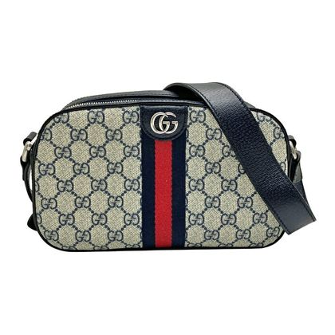
状態 ABグッチ
¥126,500税込
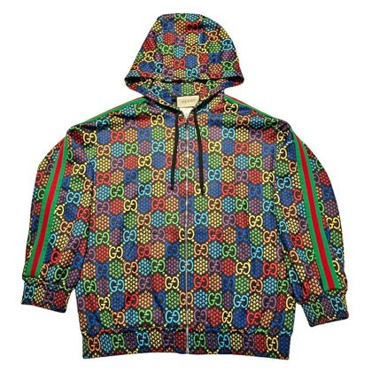
状態 ABグッチ
¥84,700税込
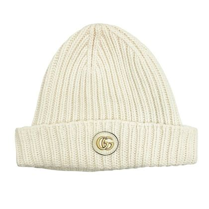
状態 ABグッチ
¥22,000税込
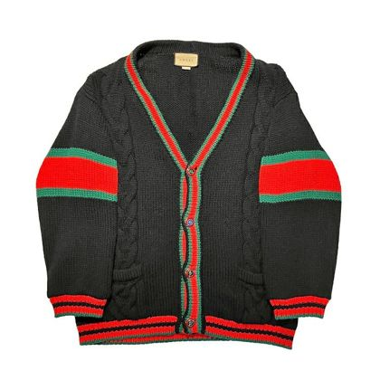
状態 ABグッチ
¥62,700税込
 状態 AB
状態 AB グッチ
¥63,800税込
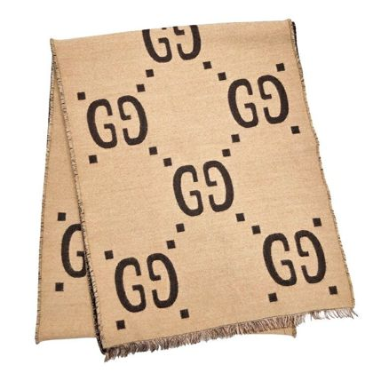
状態 ABグッチ
¥26,400税込
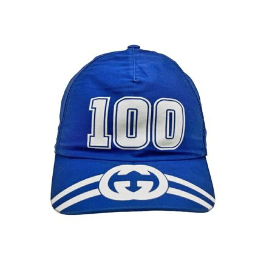
状態 ABグッチ
¥16,500税込
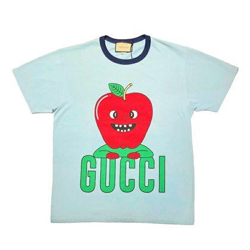
状態 Aグッチ
¥22,000税込
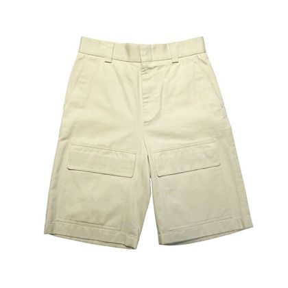
状態 ABグッチ
¥22,000税込
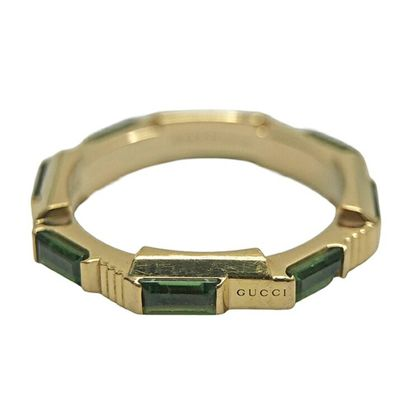
状態 ABグッチ
¥91,300税込
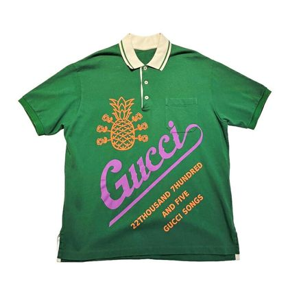
状態 ABグッチ
¥18,700税込
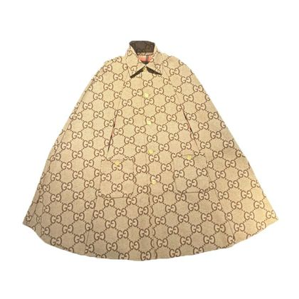
状態 Sグッチ
¥138,600税込
| 区分 | 件数 |
|---|---|
| 5万円未満 | 12点 |
| 5〜10万円 | 10点 |
| 10〜30万円 | 2点 |
| 30〜100万円 | 0点 |
| 100万円以上 | 0点 |
| 項目 | 値 |
|---|---|
| ファッション | 24点 |
| バッグ | 14点 |
| 財布・小物 | 5点 |
| ジュエリー | 5点 |
提携事業者の販売中商品24点の集計（価格は確認日時点）。価格帯：¥16,500〜¥138,600、中央値：¥55,550。
ブランド名は商品の説明のために表記しています。各ブランドとの提携・公認関係はありません。